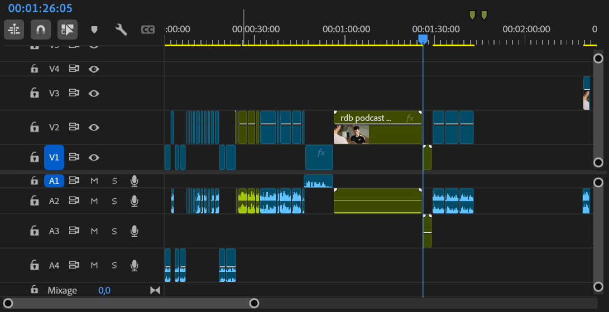
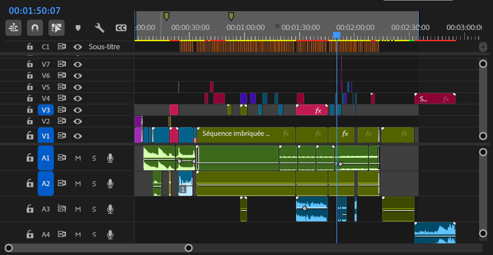
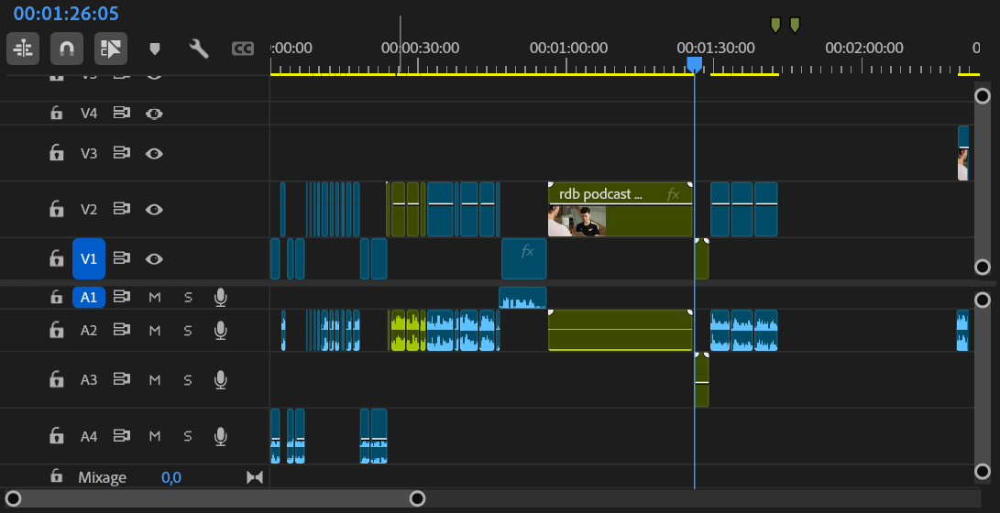
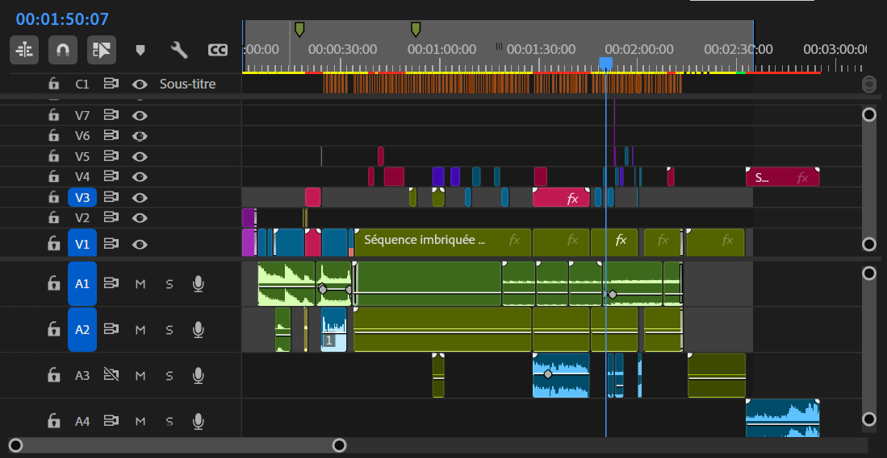

Réalisation d'une interview
Scénario, réalisation, montage
Présentation du projet
Ce projet est une interview centrée sur la passion de Noah pour l’escalade, et plus particulièrement pour la vitesse.
Grimpeur depuis plusieurs années, il s’est spécialisé dans cette discipline avec un objectif précis : passer sous les six secondes,
le sub-6, un cap important en escalade de vitesse.
L’idée n’etait pas de proposer une interview classique, en effet, pendant que Noah répond aux questions, il se prépare,
s’échauffe, grimpe et recommence. L’interview accompagne donc ses actions et suit son entraînement, ce qui permet de mieux comprendre son
quotidien et son engagement.
Ce que j’ai fait (Réalisatrice)
- Mise en place du concept, de la direction du projet
- Écriture de scénario
- Repérage des lieux et des plans
- Supervision
- Prise de son
- Sélection des rushs
- Montage vidéo (en équipe)
- Ajustements finaux


 


